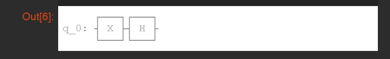
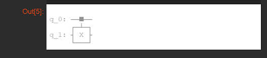

Quantum Gates using Python
Till now we've only learned what gates can do, but now we will learn how we can use gates in python!But first let's try to understand how to type random statements in python. open python and type this -
print("Hello Python World") Run this code. what do you see? the content written in paranthesis is
shown to you. here, in this code we told the computer to "print" a certain information (which is written in
brackets), and to represent that it's text, we also put double quotes (""). To know where to code python online, Click here
Defining and using variables
We use variables to give a shorter "id" for a long value we might need to use again and again. To define variables in python, type this code and use it like this -pets = 2Run this code. What is the result? its 2. When we say "pets = 2", we mean to say that "pets" is a variable and it's value is "2". When we "print" the variable "pets", the value given would be displayed.
print(pets)
Remember: As "pets" here is not a text, we didn't put double quotes ("") to represent it.
Using variables with text
Now let us understand how to use variables with normal text in one same code. type the following -name = JamesRun this code. You'll notice that the part written in quotes would be considered as text and printed as it is. While the part without quotes would be considered as a variable and it's value would be displayed instead.
print("My name is " + name)
Performing calculations in python
We can even perform calculations in python! type the code given below -x = 10Run the code. You will be displayed with the sum of 10 and 15 i.e 25. Now can you find products, quotients and differences in the same way?
y = 15
x + y
Hint: Try using "*" for multiplication and "/" for division.
Note: Here we didn't have to print text, but numbers, so we didn't need to use print().
Forming circuits in python
Its finally happening! we are going to learn how to form quantum circuits in python! But first you need to type this code to import the library and run it so that your circuit can be formed -from qiskit import QuantumCircuit, execute, Aer
from qiskit.visualization import plot_histogram
X and Y gate circuit
to make a circuit of the X gate, type this code -qc = QuantumCircuit(1)Run this. What do you see?
qc.x(0)
qc.draw()

This is the circuit we've formed. so, what's going on here? well, when we said "qc = QuantumCircuit(1)", we defined a vairiable "qc" which meant Quantum Circuit. in paranthesis (), we give the value for the number of circuit we want. When we said "qc.x(0)", we put an "X" gate on "qc" by saying "qc.x". in paranthesis, we said the counting of circuit on which we want to put it on i.e 0. Now you are probably thinking, why did we give "0" in the counting but not 1? well this is because a computer starts counting from 0, so when you count 3 apples, the computer counts is as 2 apples! in the end, "qc.draw()" means we are asking the computer to draw the circuit. Now can you draw an "H" gate in the same way? try putting "qc.h" instead and give the number in paranthesis.
Note: In a python, the default initial qubit is always 0.
Adding multiple gates
Now we will learn how to put more than one gate in the same or different circuit. Type the code given below -qc = QuantumCircuit(1)Run the code. What is the result?
qc.x(0)
qc.h(0)
qc.draw()

Here, we derived 2 gates on the same circuit, "H" and "X". now, can you try making the two gates on 2 different circuits?
Hint: try using "qc = QuantumCircuit(2)" instead and apply the gates on different countings.
CX gate circuit
This one might be a bit tricky for you to understand, but its still easy, that is to make a CX gate. Here, of you notice, we'll need to mention which qubits are supposed to be entangled. Type the code given below -qc = QuantumCircuit(2)Run this, what is the output?
qc.cx(0,1)
qc.draw()

We nottice that the first and second qubits are represented as entangled. But how dies this work? well, notice that we gave 2 values in "qc.cx()", those are the qubit countings that tell which qubit has to be entangled. Did you also see the "X" gate in the second qubit and that is connected to the first qubit? What is it for? well this connnection between one qubit's gate to the other is shown to represent entanglement. What if we swap the values given for "qc.cx()"? well when we write "(1, 0)"" in the paranthesis, we mean that qubit "1"(second qubit) is entangled with qubit "0" (first qubit) and vice versa.